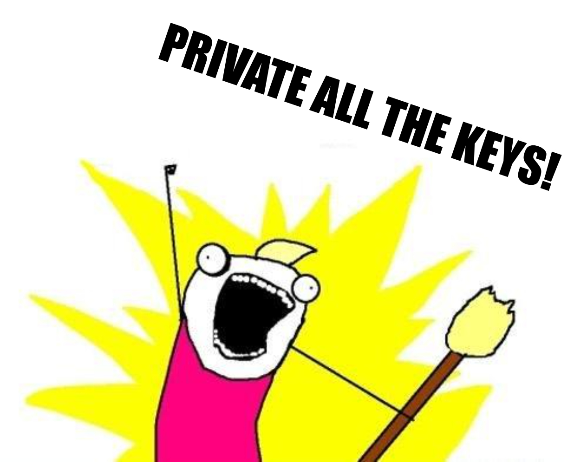

Public Key Cryptography Theory
Public key cryptography is powerful in general because it is one of the few things on the planet that can create an asymmetric power imbalance. This means that, even if the largest corporation or government were to focus every available resource into figuring out a certain individual's private key, they will not be able to do it. Isn't that crazy!? This asymmetric power imbalance is so dramatic that in the 1990s, world governments fought against the use of public key cryptography. The argument was, because public key cryptography essentially cannot be broken, it represented a critical threat to the national security of governments like the United States. We'll discuss this history more in a following section, but know that at one point using this technology was almost illegal!
Public key cryptography is powerful for blockchain specifically because it allows us to prove a message has been sent from a certain person holding a specific private key. This is a step in the direction of establishing identity in a peer-to-peer way. Remember, a blockchain protocol is trying to provide what banks or governments have previously provided but without those institutions as intermediaries. What public key cryptography does is mathematically prove a certain person holds a certain key.
Consequences
However, there's a big issue here. There's no way to determine who holds the key, just if they have the key. We are assuming the private key equals the owner of the assets, but what if someone steals your private key? This is a big security and user-experience issue for people coming into the blockchain and cryptocurrency world.
As consumers, users are probably used to being able to reset their passwords, recover their funds if there's fraud, or at least reach out to a service and get assistance in case of trouble. At its most basic, with users handling their own private keys, almost all of this disappears.
Even more troubling, regardless of the amount of messaging a user receives about protecting their private keys, many may not understand there is no safety net until it is too late. And for those users who are experienced, there are so many bad habits we've all developed as consumers which are hard to break.
All this to say: Not trusting is expensive. Please be aware of how expensive it is, not only for yourself, but also for your users. Luckily, at the end of this section, we'll walk through some basic security considerations that anyone in the crypto space should adopt from Day 1
Moar on Keys
 There are a ton of additional resources for public key cryptography, so we're going to break them up into different sections: General Public Key Cryptography Resources, Blockchain / Ethereum-Specific Public Key Cryptography Resources and Advanced Public Key Cryptography Resources.
### General Public Key Cryptography Resources
Know that in these examples, you will meet some lifetime friends, Alice and Bob. They are the most absolutely unimaginatively, Eurocentric named parties in every cryptographic key exchange (rather than using A and B). Please, please if you're ever teaching this to someone else use a more interesting name than Alice and Bob, like Akash and Basilia. But, it is the common way to discuss it and perhaps there's value in that commonality across cultures.
- Video & Interactive Code: ETH.Building with Key Pairs Excellent hands-on tutorial about public keypairs from Austin Griffith using his ETH.Build platform (highly recommended)
- Article: Public Key Cryptography (Wikipedia) A good starting place for folks to get an understanding of the terms and be able to dig into some of the background or deeper ideas.
- Video: End to End Encryption — Computerphile Introducing the general concepts behind using encryption in public networks
- Video: Gambling with Secrets — RSA Encryption
- Article: What is Asymmetric Encryption?
- Article: Keeping Secrets Secret (BBC) This is a valuable resource explaining, in simple visual terms, the modular arithmetic underpinning the security of public key cryptography, hashing (which we'll learn about next) and any other one-way or "trapdoor" functions. It illustrates how you cannot break a private key's encryption with brute-force but can easily validate it if you have the accompanying public key.
- Video: Secret Key Exchange — Computerphile Not public key encryption but good to know in terms of general cryptography mechanics
- Video: Elliptic Curves — Computerphile Going deeper into the Elliptic Curve encryption behind public key cryptography.
- Mini-Course: Basic Key Exchange Requires a free Coursera registration, but this is another general overview on the mechanics of key exchanges (not RSA encryption specifically) from Dan Boneh's Cryptography I course from Stanford University.
### Blockchain / Ethereum-Specific Public Key Cryptography Resources
Now that you have an understanding of public key cryptography generally, let's dive into how it is used in blockchains, specifically Ethereum. The following links will mainly show how private keys are used to generate Ethereum accounts, which then become a stand-in for identity on the Ethereum network. Note that all Ethereum addresses start with the first two characters 0x, which is not actually part of the address but rather a prefix used to let programs know the address is coded in hexadecimal format.
- Book Excerpt: Keys and Addresses (Mastering Ethereum) Excerpt from Andreas Antonopoulos and Gavin Wood's excellent book, Mastering Ethereum available for free as an e-book through this GitHub repo.
- Article: How are Ethereum Addresses Generated? (Stack Overflow) A nice, thorough answer walking through the process of generating a private key to having an Ethereum address linked to that private key
### Advanced Public Key Cryptography Resources
- Coding Problem Set: Cryptopals This is an extremely advanced problem set series discussing applied cryptography generally. Not for the faint of heart!